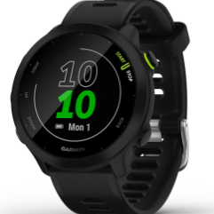
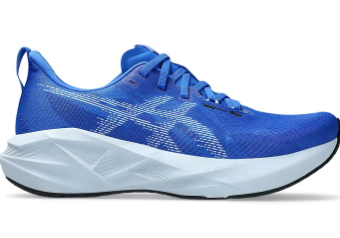
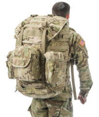
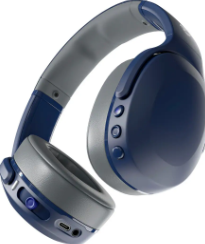
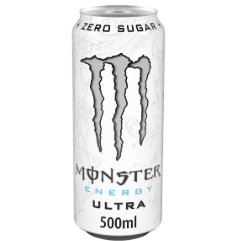
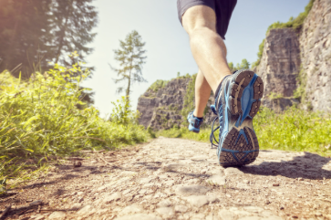

My Training Essentials Collection
This is my digital collection of training essentials. Each item represents something that keeps me moving, focused, and motivated, whether I am running, lifting, rucking, doing schoolwork, or trying to stay disciplined during a busy week. This collection also shows how responsive design can organize personal content across mobile, tablet, and desktop screens.

Garmin Running Watch
Running Tech | Pace | Heart Rate | Training Zones
My Garmin watch is one of my most useful training tools. It helps me track my pace, heart rate, running distance, and training zones. It keeps me accountable and helps me see progress over time.

Running Shoes
Fitness Gear | Speed | Endurance | Daily Training
Running shoes are a major part of my training routine. They represent consistency, discipline, and the goal of becoming a stronger runner. A good pair of shoes makes daily training feel more serious and more comfortable.

Training Ruck
Endurance | Strength | Military Training
My ruck represents toughness and endurance. Rucking is simple, but it builds both physical and mental strength. It reminds me that progress often comes from carrying weight one step at a time.

Gym Headphones
Motivation | Focus | Music | Workouts
Headphones help me lock in during workouts. Music keeps me focused when I am lifting, running, or warming up. They help block out distractions and make training feel more intense.

Monster Energy
Daily Fuel | Energy | Long Days | Focus
Monster Energy is part of my routine when I need an extra push. It represents long days of workouts, assignments, and staying locked in when I still have things to finish.

Outdoor Trails
Adventure | Running | Nature | Discipline
Outdoor trails remind me that fitness is not only about performance. Running outside helps clear my mind, enjoy nature, and build discipline away from the gym.